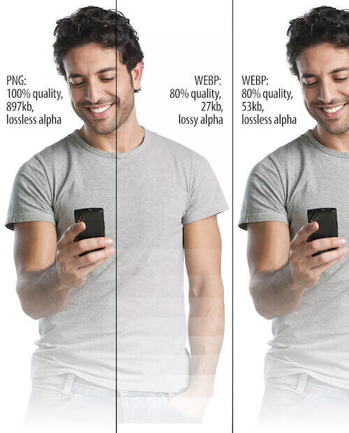

Как работает WebP
WebP использует новый алгоритм сжатия, поэтому искажение (т.е. деформация и ухудшение качества) выглядят иначе относительно других типов файлов. WebP оставляет четкие края фотографии, но при этом ухудшается детализация и текстура, что неизбежно при сжатии с потерями. В то время как сопоставимый JPEG-файл показывает дрожание на сплошных участках изображения, WEBP может похвастаться гладкими переходами даже на самых низких настройках качества.
Вы можете сжать WebP как "с потерями" (lossy), так и "без потерь" (lossless). Последний вариант сохранит больше данных, в то время как первый делает размеры результирующего файла еще меньше.
К содержанию
Сравнение с PNG, JPG и GIF
Чем WebP лучше других форматов изображений? WebP позволяет уменьшать файлы изображений без значимой потери в качестве. Google расписал преимущества по результатам собственного исследования. Результаты такие:
- В сравнении с PNG при сжатии без потерь файл по размеру меньше на 24%
- В сравнении JPEG при сжатии с потерями файл по размеру меньше на 25-34%
- WebP поддерживает прозрачность без потерь (известную, как альфа-канал) при увеличении размера всего лишь на 22%
- Сайты со сжатыми WebP-картинками работают быстрее. Уходит меньше времени на обработку небольших файлов. Даже если в статье будет под сотню изображений, компрессия спасет от чересчур долгих загрузок.
- Загружая на VDS маленькие изображения, можно сэкономить на пространстве жесткого диска.
- Пользователи будут тратить меньше мобильного трафика при посещении сайта со смартфона.
- Выделенный интернет-канал до сервера будет загружен гораздо меньше, если передаваемый медиаконтент меньше весит.
| WebP | PNG | JPG | GIF | |
|---|---|---|---|---|
| Сжатие с потерями | + | + | + | - |
| Сжатие без потерь | + | + | + | + |
| Прозрачность | + | + | - | + |
| Анимация | + | - | - | + |
Для чего же лучше (не)использовать? Недостаток этого формата в том, что лица людей могут выглядеть пластиковыми или постеризированными при низкой настройке качества.


На фото видны пластилиновые части: спинка носа, скула, подбородок, надбровье.

Также, обратите внимание на нежелательные полосы в альфа-канале.
Формат JPG (49.086 кб)
Формат PNG (70.960 кб)
Формат GIF (36.519 кб)
Формат WebP (37.054 кб)
| Преимущества | Недостатки |
|---|---|
| Меньший размер файла | Поддержка меньшим количеством браузеров |
| Улучшенный алгоритм сжатия | Искажение имеет пластиковый вид |
| Более качественный переходы цвета, прозрачность, анимация | Неудобный интерфейс экспорта |
| Маска альфа-канала |
К содержанию
Как внедрить WebP на сайте?
Правильная логика внедрения заключается в использовании прогрессивного метода улучшений на сайте. Что конкретно имеется ввиду? Принцип следующий:
- Если браузер поддерживает WebP, то на странице выводить WebP
- Если браузер не поддерживает WebP, то выводить JPG
Вариантов по внедрению множество.
Способ 1. Использовать тег picture.
Как работает тег picture? При использовании такой разметки браузер загрузит первое изображение, которое поддерживает. Если браузер не поддерживает picture, то указан img по умолчанию. Пример:
<picture>
<source srcset="img/photo.webp" type="image/webp">
<img src="img/photo.jpg" alt="Description of Photo">
</picture>
Способ 2. Использовать конвертер изображений. Например, инструмент Squoosh предоставляет возможность оптимизации изображений. Разработкой занимался Google. Ссылка на сервис — Squoosh.
К содержанию
Поддержка браузерами
Следует отметить,что все самые популярные браузеры уже поддерживают WebP — Safari, Opera, Firefox, Chrome, Edge. Более точную информацию можно узнать по ссылке
К содержанию
Клиффхэнгер
Появился новый формат для сжатия изображений AVIF, который взорвал интернет (Chrome уже поддерживает). Сжимает на 50% лучше, чем JPG, и на 20% лучше, чем WEBP.
К содержанию